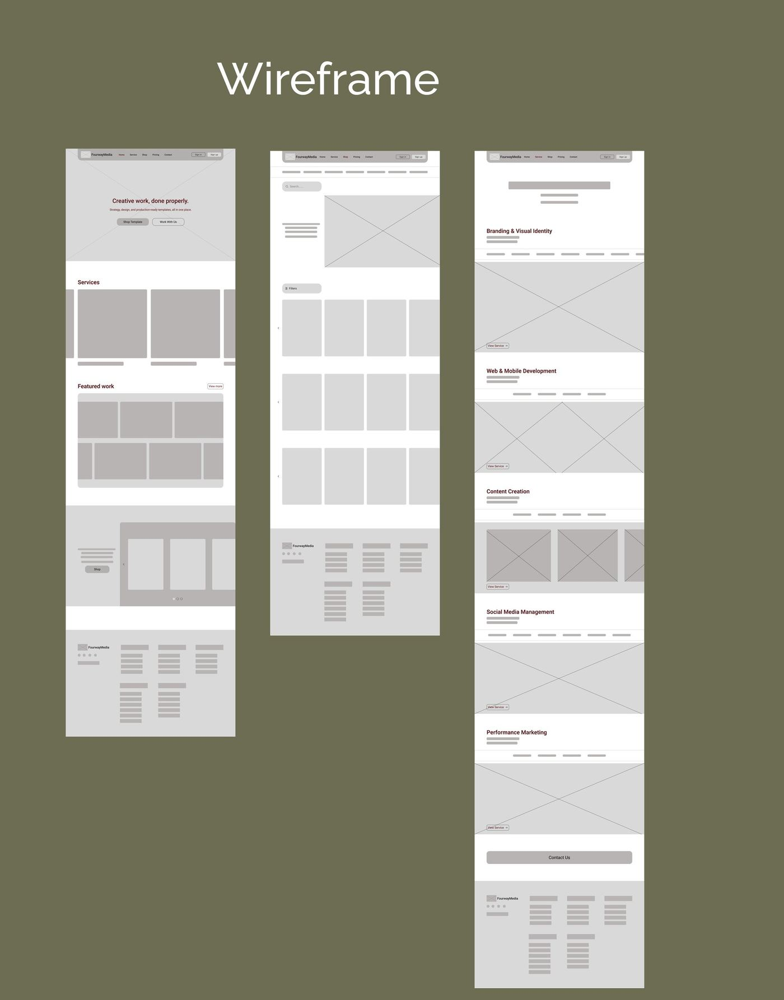
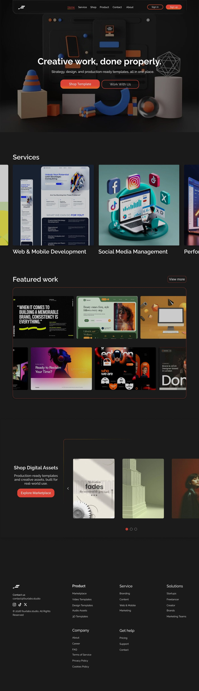
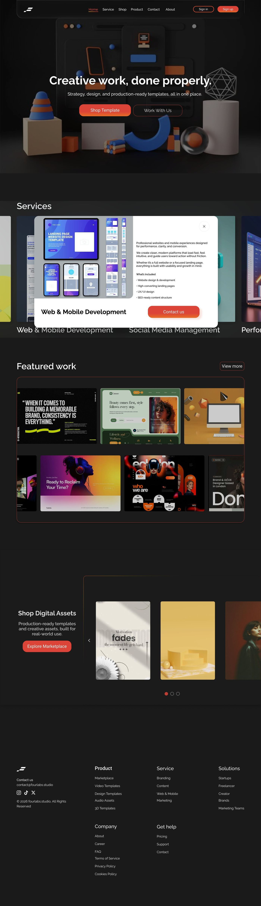
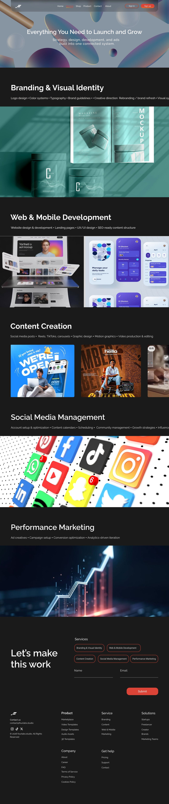
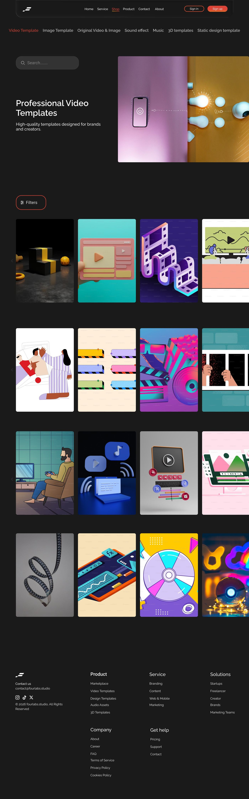
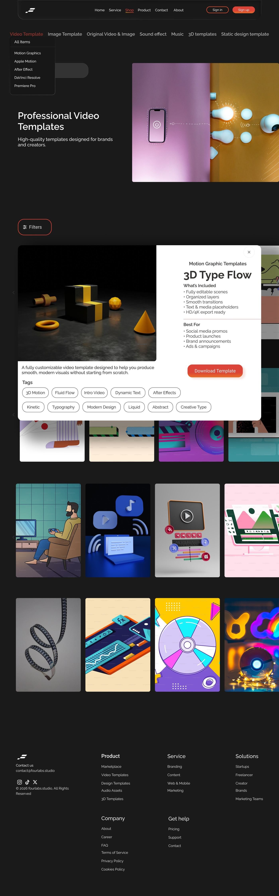
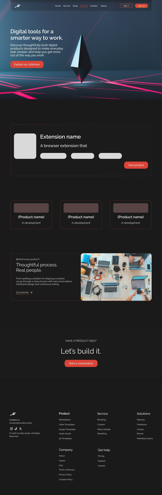

Fourlabs Studio
Turning a 9-page UX brief into a live site that serves two visitors: the business that wants to hire a studio, and the creator who just wants a template.
The brief
Fourlabs is a creative studio in Lagos with two businesses under one roof: an agency (branding, content, web, social, paid ads) and a shop of video, image, 3D and audio templates. The brief set the pages, sections, components and a palette, and gave the homepage one goal: "convert users to Shop OR Contact for Services."
The challenge
A founder who wants to hire needs proof and an easy way to start a conversation. A creator who wants a template needs to browse fast and download. One site has to serve both without either feeling like an afterthought.
Structure first
Wireframes before colour
I wireframed the three pages that carry the business: Home (two doors, then services, work and a shop band), Shop (search, tabs, a filterable grid) and Services (every service stacked, ending in one contact form). The only question at this stage: can each visitor find their path?

From the brief, made obvious
Two doors on the first screen
The brief asked for a primary "Shop Templates" button and a secondary "Work With Us". I put them side by side under one line, "Creative work, done properly." Shop is filled because it's the lower-commitment action; Work With Us is outlined, present but quieter. Each visitor picks a path before they scroll.

My call
A quick look at a service, without leaving the page
The brief linked each service card to a detail page. I made the first click open a modal instead: what the service is, what's included, and a "Contact us" button. A visitor can compare three services in ten seconds without losing their place, and the full pages are still one click deeper.

My call
The Services page ends in one form you can tick
Instead of sending people to another page, the Services page ends with "Let's make this work": tick the services you want, add your name and email, send. It matches how Fourlabs sells (one service or a bundle) and removes a page between interest and enquiry.

Built on the brief, plus my layer
A shop organised the way creators search
Creators don't search for "a video template". They search for "an After Effects intro". So the Video Template tab drops down by software: After Effects, Premiere Pro, DaVinci Resolve and Apple Motion.

My call
Answer the buyer's questions before the click
The product page became a modal over the grid, so browsing never breaks. It answers three things: what's included (editable scenes, organised layers, HD/4K export), what it's best for (promos, launches, ads), and tags to find similar templates. Then one "Download Template" button.

Not in the brief
A Products page built to grow
The studio was building its own tools, starting with Guidemint, a browser extension. I designed the page as slots: one featured product, then "in development" cards that fill in as each one launches. It never looks empty, and nobody redesigns it every time something ships.

Dark mode, by request
The live site has a light and a dark mode. The engineering team asked me to design the dark mode only and built the light mode from it. Inside the dark theme, the red-orange accent appears only on things you can click: buttons, the active menu item, the filter button. If it's orange, it does something.
Figma to live
Emmanuel Essien, Fourlabs' CTO, built the site straight from my Figma file. There was no export pack: he had direct access, so there was one source of truth and nothing got lost in the hand-over.
What I'd add next
- Price and licence on every shop card. The brief asked for them; right now you open a template to find out what it costs.
- The full filter panel: format, orientation, duration, price range, sort by popular or new. I designed the Filters button, not the panel behind it.
- Empty states, so a filter that finds nothing says "No results, clear filters" instead of a blank grid.